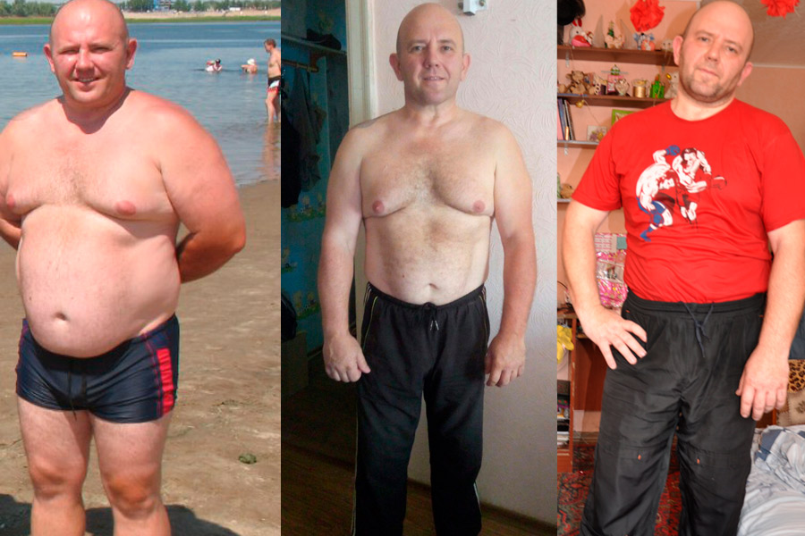

CUKRZYCA TYPU 2. JAK ŻYĆ Z TYM?
Witam wszystkich!
Mam na imię Aleks. Cukrzyca typu 2 została zdiagnozowana u mnie w wieku 43 lat. W wieku 45 lat udało mi się wyzdrowieć i teraz chcę wszystkim powiedzieć, jak to możliwe w domu bez nadzoru lekarzy.
Jak to się wszystko zaczęło
Po 40 latach zacząłem szybko nabierać na wadze. Średni wiek nie był bardzo aktywny, więc nawet nie myślałem o powiązaniu otyłości z chorobą.
Zły sen, częste i nieuzasadnione pragnienie, suchość w ustach przypisywałem nadwadze. Kiedy do tego zestawu dodano spadły wzrok, moje ręce zaczęły opadać - wciąż jestem bardzo młody!

Sprawa przypadku
Czas mijał, na wadzenwciąż przybierałem, a ja pozostawałem nieświadomy mojej choroby. Wszystko zmienił przypadek. Podczas ubiegania się o nową pracę musiałem przejść badanie lekarskie, które wykazało, że otyłość była spowodowana cukrzycą.
Zostałem skierowany do endokrynologa, dietetyka i okulisty. Każdy lekarz dawał swoje zalecenia i wszyscy one wydawały się karami: garście tabletek, ścisła dieta, ciągłe monitorowanie cukru i masy ciała...
Uczciwie starałem się przestrzegać wszystkich zaleceń lekarzy. Brałem leki, ograniczyłem ilość niezdrowego jedzenia do minimum, próbowałem uprawiać sport.
Wymuszone zmiany rytmu życia powinny mnie zachęcić, ponieważ nigdy wcześniej nie lubiłem sportu, a zwłaszcza nie siedziałem na diecie. Ale nie czułem się lepiej. Czułem się jak niewolnik choroby i to wszystko robiłem tylko dlatego, że bardzo bałem się skutków cukrzycy.

W koszmarach śniło mi się, jak amputowano mi nogi, jak uzależniłem się od insuliny i sam sobie robiłem zastrzyki, czego się boję na śmierć. W pewnym momencie zdałem sobie sprawę, że jeśli nie wygram wojny z cukrzycą, ona mnie pokona. I ożywiłem.
Jakiś gniew spowodował, że zdążyłem schudnąć, odmówić deseru i wpychać w siebie potrawy o smaku trawy i kasze zamiast zwykłego smacznego jedzenia. Cukier wrócił do normy, byłem pewien, że to już finisz zwycięstwa!
Rozczarowanie
Sześć miesięcy później znów poszedłem do lekarza, aby otrzymać "uwolnienie". Ale zamiast inspirującego "teraz jesteś zdrowy, możesz kontynuować normalne życie", usłyszałem suche: "Cukier jest w normalnych granicach, pozostawimy zalecenia takie same, ale lekarstwo wypiszemy nowe."
Wszystko we mnie wpadło. Po pierwsze, nie było ustępstw w diecie. Po drugie, jedna trzecia mojego wynagrodzenia zostało już wydane na pigułki. A teraz lekarz przepisał mi droższe leki i subtelnie zasugerował: chcesz żyć - będziesz brać.

Ogarnęła mnie fala beznadziejności. Pracować resztę życia na pigułkach, ograniczać się od pysznego jedzenia i nie odczuwać radość życia w ogóle nie pasowało do moich planów. Dlatego po krótkiej przygnębieniu postanowiłem plunąć na wszystkie zalecenia lekarza i zejść na diabły
Tybet, wrażenia i wyleczenie
Pierwszą rzeczą, którą chciałem zrobić, udać się w podróż. Zebrałem wszystkie swoje oszczędności i pojechałem do Tybetu. Oprócz ogólnych niezapomnianych wrażeń z podróży, nawiązałem wiele interesujących znajomości, wśród których byli ludzie z różnych środowisk.
Jeden z nich okazał się fajnym facetem, który pozbył się cukrzycy kilka lat temu bez żadnych klinik i ograniczeń. Denis cierpiał na cukrzycę od dzieciństwa, a w 35 roku wziął udział w badaniu klinicznym nowego leku, który opracowuje lek zmniejszający ostatnie 10 lat stężenie cukru we krwi.
Lek potwierdził skuteczność we wszystkich próbach i wszedł do sprzedaży pod nazwą handlową . Nowy przyjaciel nalegał, abym wypił kurs tego leku. Jego słowa brzmiały tak przekonująco, że podjąłem decyzję.
Produkt jest całkowicie naturalny, certyfikowany, nie ma przeciwwskazań i skutków ubocznych, więc nie było się czego obawiać.
Wyleczenie
Miałem doświadczenie leczenia lekami, więc nie miałem żadnych szczególnych oczekiwań. Dla czystości eksperymentu celowo nie ograniczałem siebie w jedzeniu, ale nie spodziewałem się cudu. Ale się zdarzyło.
W ciągu pierwszych kilku tygodni przyjmowania wszystkie objawy cukrzycy doszły do zera. Nadal piłem dużo wody, ale w ustach nie było uczucia cukru. Zawroty głowy i bóle głowy zniknęły, zacząłem wysypać się i ogólnie czułem się o wiele bardziej energiczny.
Zacząłem nawet chudnąć. To była tak dobra wiadomość, jak i zła, ponieważ gwałtowny spadek masy ciała mógł wskazywać na zaostrzenie choroby. Obawy skłoniły mnie do ponownej wizyty u lekarza.

Kiedy ponownie zdałem wszystkie testy, lekarz rutynowo oświadczył: "Jest pan zdrowy, jak byk. Na co pan narzeka?" Nawet pomyliłem się z odpowiedzią. Powiedziałem, że zdiagnozowali cukrzycę typu 2, wykonałem zalecenia lekarza, nie było sensu. Wyjechałem na wakacje, wróciłem zdrowy.
"W mojej praktyce jest to rzadki, ale nie pojedynczy przypadek. Czasami cukrzyca może być całkowicie wyleczona. Ty, co najważniejsze, nie pozwól sobie już odejść." Przyrzekłem, że będę umiarkowanie monitorować swoją dietę i niezgrabnie pożartowałem, że mam nadzieję, że nie spotkamy się ponownie.
Od tego czasu minęło już 6 lat. Od czasu do czasu mierzę cukier na czczo, po jedzeniu lub kolacji. Przez lata tylko dwa razy zobaczyłem 6,9 i 7,2 na glukometrze. Mogę powiedzieć z całą pewnością że pokonałem cukrzycę. A wszystko to dzięki Denisowi i .
Gdzie zdobyć
Kilka razy zdarzyło mi się kupować falsyfikaty w aptekach, więc nie radzę nikomu brać tam . Lepiej jest to zrobić na stronie producenta - na pewno jest tam oryginalny produkt. Zwłaszcza do będzie trwała promocja, będzie dostępny z 50% zniżką .


Zdrowia dla wszystkich!